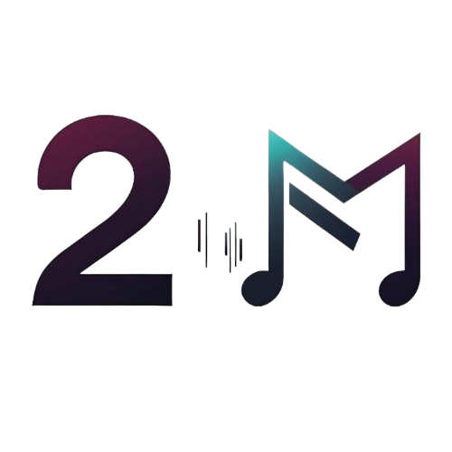

2Melody se trata de una página web orientada a la música, cuyo objetivo es proporcionar a fandoms una forma de hablar entre ellos, seguir a sus artistas favoritos, comprar merchandising etc... de una manera fácil, cómoda e intuitiva.
A su vez, aquellos artistas que decidan registrarse a la página podrán colgar todas las canciones, noticias, merchandising que les apetezca, haciendo que la conexión entre ellos y sus fans sea lo más real posible.
